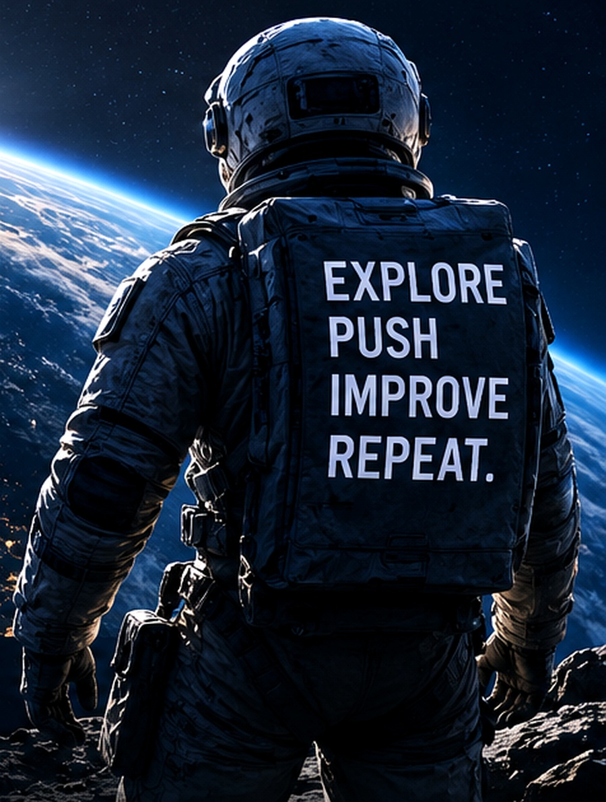

ACTIVE01
GUARD
Consumer financial admin that surfaces overlooked opportunities and turns findings into clear next actions.
Explore →PRODUCTS / EXPERIMENTS / IDEAS
Products, experiments and ideas at the intersection of technology, markets and human potential. Real tools. Real experiments. A more interesting future.
FEATURED PRODUCTS /
Consumer financial admin that surfaces overlooked opportunities and turns findings into clear next actions.
Explore →Private device-to-device transfer with explicit approval, integrity checks and a native Android track.
Explore →Purpose-bound context for ChatGPT that expires, can be revoked, and leaves recall receipts instead of becoming indefinite memory.
Private build →Tracks returns, trials, warranties, rebates and price-match deadlines while keeping confirmed dates separate from inference.
Private build →A Godot armored-vehicle action roguelite built around short runs, scrap, escalating rig upgrades and boss encounters.
Private build →Personal Pokémon and Yu-Gi-Oh! collection storefront with a hardened PayPal-ready checkout path.
Visit shop →REPOSITORY MAP /
The public hub stays here. Product code lives in dedicated repositories, with local-only and pre-launch work kept private until it is ready to ship.
Portfolio + live Collectables storefront
Consumer financial admin
Device-to-device transfer
Purpose-bound context for AI
Purchase deadline tracking
Armored roguelite
Vertical agent orchestration
LocalLaunch Studio
PRODUCT NOTES
A clearer view of the problem, current build and next proof point behind the main products.
GUARD / VALIDATION
HANDOFF / PRIVATE BETA
WHY / IN DEVELOPMENT
MO’FRIES / CONSUMER BRAND
LIVE LAB
Markets and technology signals remain part of the experimental side of this portfolio, below the product work.
THE MISSION /
I'm Moheen Mahmood, a London-based builder working across software, AI and entrepreneurship. SLIME786 is where practical tools, playful experiments and small ventures become real products.
I care about clear problems, usable interfaces and shipping something people can actually try.
Work with me →NOW / CURRENTLY
A living snapshot of the themes I keep coming back to — updated as my interests evolve.
Following how AI changes software, work, productivity and the economics of building digital products.
LEARNING →Understanding companies, incentives, capital allocation and the difference between short-term noise and long-term value.
RESEARCHING →Turning ideas into interactive digital experiences — including this portfolio and the experiments inside it.
BUILDING →LIVE SIGNALS /
Live market context and a small technology feed. Informational only; external data can be delayed.
Automatically highlights unusually active stories from the live technology feed.
WEEKLY BRIEF / AUTOMATIC EDITION
The page builds a fresh weekly reading list from the current technology feed. It refreshes automatically when visitors return.
The live reading list is automatically assembled from public technology stories and is not written or endorsed by Moheen. My authored notes remain separate below.
IDEAS / JOURNAL
Short-form thinking rather than formal essays — ideas, questions and themes worth revisiting.
AI / PRODUCTS
The interesting shift is not only what models can do, but how naturally intelligence becomes part of everyday software.
Read note ↗INVESTING
I’m interested in companies where strong products, distribution and execution compound over long periods.
Read note ↗TECHNOLOGY
The tools behind a platform shift can be as important as the applications everyone notices first.
Read note ↗BUILDING
This website is an experiment in turning a personal page into a living command centre: data, ideas, code and play in one place.
Read note ↗
POINT OF VIEW
Keep moving forward. Keep learning. Keep looking at what others might miss.
PROJECTS / BUILT HERE
These are not placeholder client projects. They are working modules I have built into this portfolio and can keep developing in public.
JAVASCRIPT / API / DATA UI
JAVASCRIPT / GAME LOGIC / UI
GITHUB / API / ACTIVITY
PUBLISHING / INTERACTION
API / NEWS / CURATION
WRITING / STATIC WEB
Short browser games built into the Command Centre. Progress and high scores stay on this device.
Protect Earth. Click or tap incoming objects before they reach the defence line.
Memorise the signal sequence, then reproduce it. Each round adds another node.
THE OBSERVATORY / COMMUNITY
A lightweight community layer for questions about technology, markets and the future — without turning the site into an empty traditional forum.
AI / NEXT 10 YEARS
Models, chips, energy, data, interfaces, robotics — or something we are underestimating?
Reactions are stored on this device only. The site does not collect personal data for this poll.
Send me your take ↗TRANSMISSION / UPDATES
Occasional notes on technology, markets, things I’m building and ideas worth revisiting. Until a mailing service is connected, this opens a real email subscription request rather than pretending to collect an address.
PERSONAL TIMELINE
Not a résumé — just the themes that define the direction of this site and what I want to keep exploring.
Home base — a global city where technology, capital and culture constantly overlap.
A long-term curiosity about software, AI, digital products and the infrastructure behind them.
An interest in businesses, markets, capital allocation and thinking beyond short-term headlines.
Turning those interests into projects, experiments, research and digital experiences.
CONTACT
DIRECT MESSAGE
One place for what I’m building, watching, learning and publishing — designed to stay useful rather than static.
Building a living personal platform around technology, markets, projects and ideas.
Live crypto, market context and the themes currently on my radar.
Enter Radar →Working notes on technology, businesses, infrastructure, markets and building.
Read Journal →Projects become case studies: what I tried, how I built it and what changed.
View Project 001 →Follow the repositories and experiments behind the site.
Open GitHub →